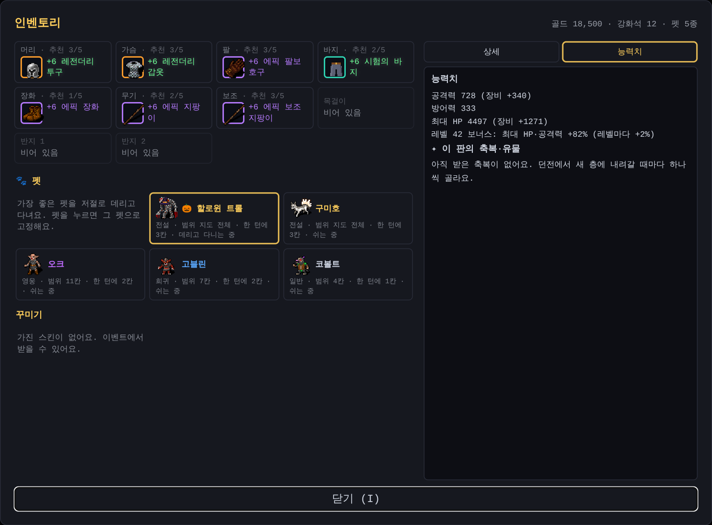
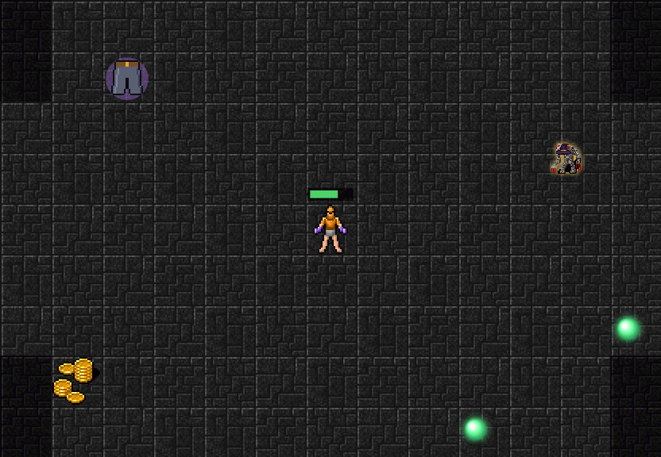
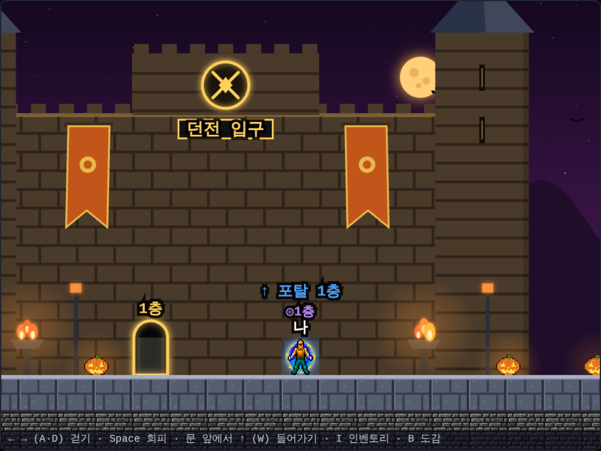
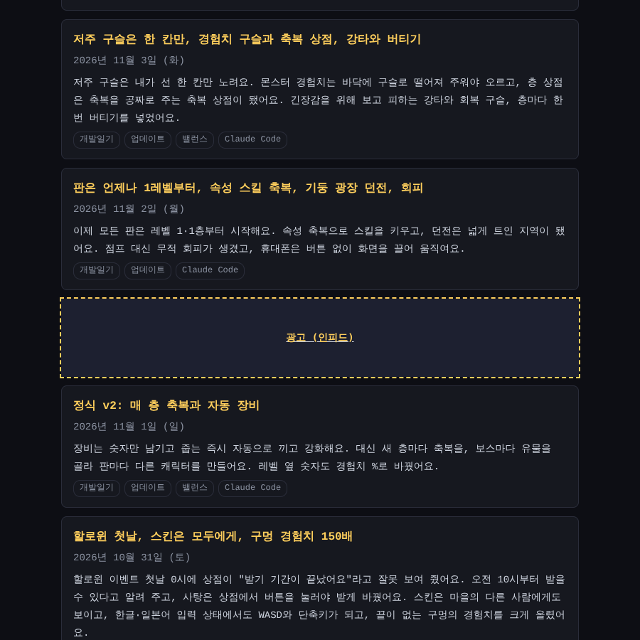
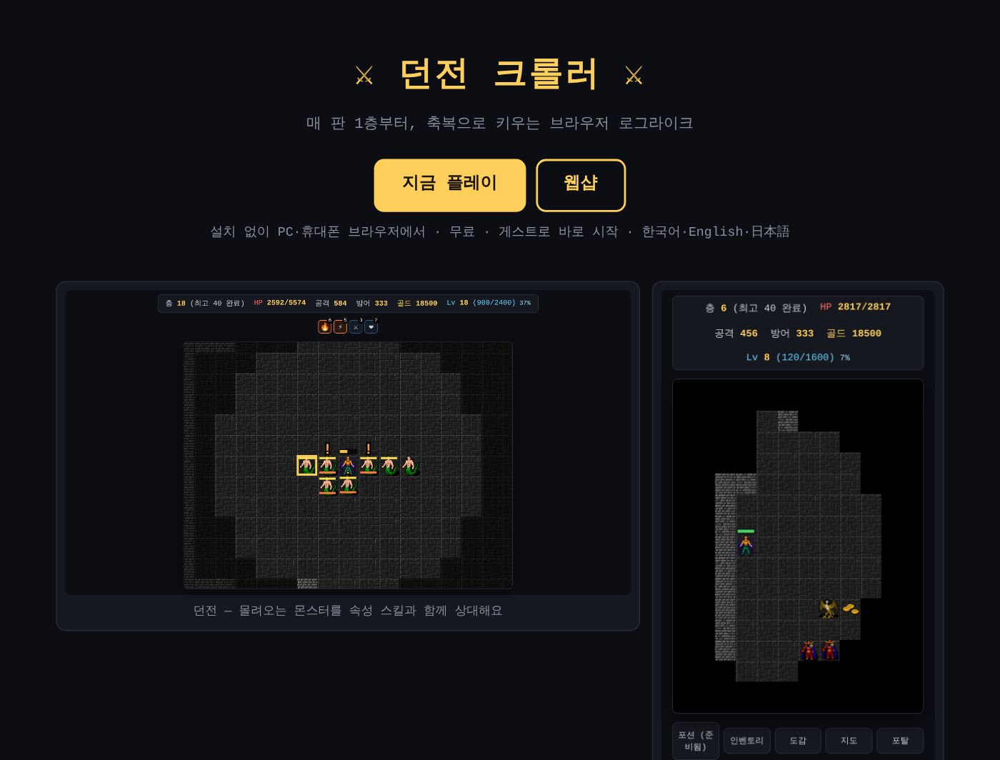
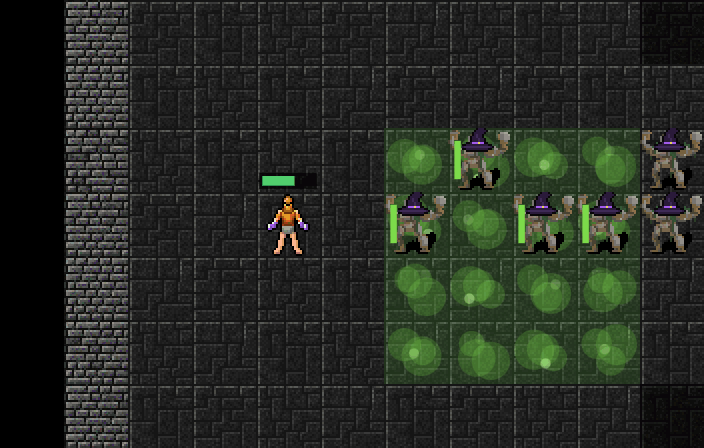
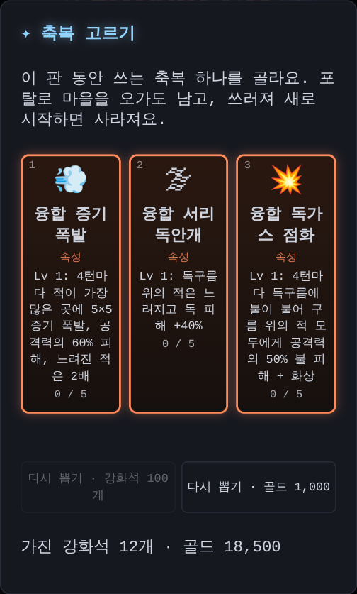
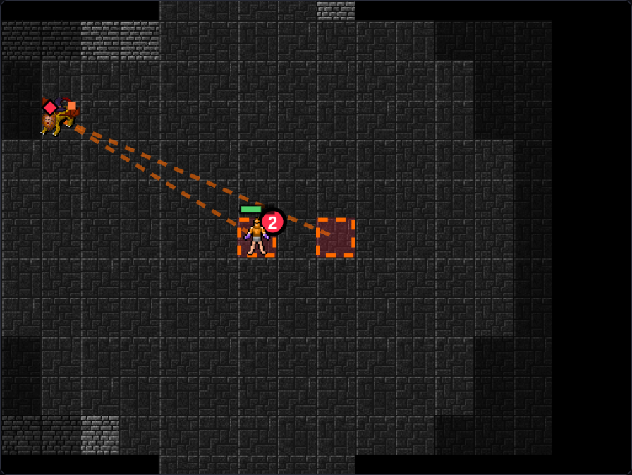
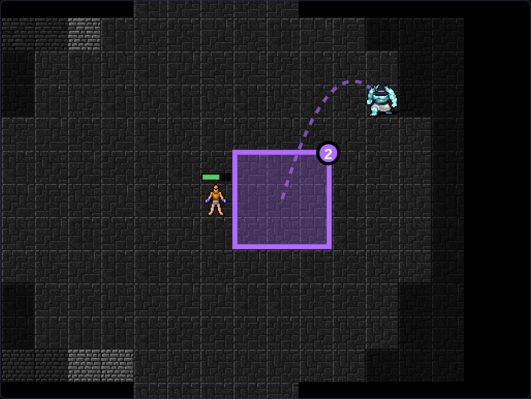

부활은 그 자리에서, 각성 스킬과 새 축복, 몬스터 공격 속성, 가까운 계단, 펫, 맨몸으로 새 판
깊은 층까지 가는 게 랭킹이라, 아깝게 쓰러졌을 때 한 번 더 기회가 있어야 해요. 그런데 지금까지 부활은 쓰러진 층을 처음부터 다시 시작했어요. 몬스터도 모두 새로 나와서, 거의 다 잡아 둔 층이면 손해였어요. 값도 캐시 10개였고, 광고 부활은 하루에 한 번뿐이었어요.
쓰러진 자리에서 이어서
이제 부활하면 쓰러진 그 자리에서 HP 가득 찬 채로 이어서 해요. 이 층에서 잡은 몬스터는 그대로 없고, 축복·유물·레벨·능력치·골드도 모두 그대로예요.
바로 다시 쓰러지지 않게 잠깐 무적이 되고, 붙어 있던 몬스터는 몇 칸 밖으로 밀려나요. 날아오던 탄과 강타 예고도 사라져요.

캐시 5개 또는 광고
부활 값은 캐시 10개에서 5개로 내렸어요. 광고를 보고 부활하는 건 하루 횟수 제한이 없어졌어요. 대신 지금처럼 한 판에 한 번만 쓸 수 있어요. 쓰러진 채로 창을 닫았다가 다시 와도, 그 층 그대로 부활할 수 있어요.

랭킹에 부활 표시
부활을 쓴 판에서 세운 층 기록에는 랭킹에 초록색 ♻ 부활 표시가 붙어요. 부활 없이 더 깊이 내려가 기록을 새로 세우면 표시는 사라져요. 누가 부활 없이 내려갔는지 랭킹에서 바로 보여요.
35층에 오면 거의 다 만렙이었어요
레벨이 오를 때마다 축복을 하나씩 골랐더니, 35층쯤이면 속성 스킬은 Lv 10이고 공격력·HP·방어력 축복도 거의 끝까지 올라 있었어요. 더 고를 게 없으니 축복 고르는 재미도 줄었어요.
그래서 축복은 이제 2레벨마다 하나씩 골라요. 던전에 처음 들어갈 때(1층) 받던 축복도 없앴어요. 대신 끝까지 올린 다음에 고를 것을 새로 만들었어요.
각성 스킬
속성 스킬이 Lv 10이 되면, 그 속성의 각성 스킬이 축복 후보로 나와요. 각성 스킬도 Lv 10까지 올라가요.
- 👢 각성 불의 장화: 내가 지나간 칸에 잠깐 불이 붙어요. 그 위를 밟은 몬스터는 턴마다 불 피해를 입어요
- 🧊 각성 얼음 보호막: 방어력이 올라요 (Lv 10이면 +50%)
- 🧲 각성 전자기장: 몇 턴마다 둘레 몬스터의 최대 HP를 %로 깎아요. 다른 스킬보다 자주 터지지는 않지만, 레벨이 오르면 범위가 1칸에서 4칸까지 넓어져요. 보스는 절반만 깎여요

새 축복과 유물
- 🩸 흡혈귀의 이빨: 흡혈 +2% (최대 5번)
- ⚗ 완벽한 물약: 물약 장인을 끝까지 올리면 나와요. 한 번 고르면 포션 회복량 +50%, 두 번 고르면 포션 하나로 HP가 가득 차요
- 넓은 눈·숨 고르기·황금 손은 뺐어요

보스를 쓰러뜨리면 고르는 유물에는 속성 저항 넷이 생겼어요. 🔥 불꽃 비늘 · ❄ 서리 깃털 · ⚡ 피뢰침 · 🧪 해독 약초. 아래 몬스터 공격 속성을 덜 받게 해 줘요.

몬스터 공격에도 속성이 붙어요
일반 던전 10층부터 몬스터 일부의 공격에 속성이 붙어요. 깊이 내려갈수록 많아져요. 몬스터 옆의 작은 색 점으로 알 수 있어요.
- 🔥 불: 맞으면 화상, 몇 턴 동안 조금씩 피해
- 🧪 독: 화상과 비슷하게 턴마다 피해
- ❄ 얼음: 잠깐 방어력이 깎여요
- ⚡ 번개: 회피를 한 턴 늦게 쓸 수 있어요
화상과 독은 맞은 피해를 기준으로 계산해서, 방어력이 높으면 같이 작아져요. 버티기로 HP 1이 남으면 화상과 독도 풀려요.

계단은 화면 안 가까운 곳에
20층이 넘으면 층이 아주 넓은데, 마지막 몬스터를 잡으면 계단이 너무 먼 곳에 생겼어요. 이제는 지금 보이는 화면 안에서, 바로 옆은 아니고 몇 칸 걸어가야 하는 곳에 계단이 나와요.

나이트메어와 헬도 맞췄어요
축복 2레벨마다, 몬스터 공격 속성까지 넣고 1층부터 한 판을 시뮬레이션으로 많이 돌려 봤어요. 일반 던전 50층까지 가는 비율은 예전과 비슷한 약 60%예요.
그런데 나이트메어와 헬은 오히려 너무 쉬워졌어요. 약한 축복 셋이 빠지니 고르는 축복이 모두 쓸모 있는 것이 되어서예요. 그래서 나이트메어와 헬 몬스터를 조금 세게 했어요. 이어서 들어가면 나이트메어 약 84%, 헬 약 52%가 끝까지 가요 (예전 83%, 40%).
가방에는 펫과 스킨만
장비는 줍는 즉시 더 좋으면 끼고, 아니면 강화석으로 분해해요. 그런데 예전에 모아 둔 장비나 우편함으로 받은 장비가 가방에 그대로 남아 있었어요.
이제 가방에는 펫과 스킨만 있어요. 가방에 남아 있던 장비는 게임을 열 때 한 번에 정리해요. 더 좋은 장비는 끼고, 나머지는 강화석으로 분해해요. 우편함으로 오는 장비도 바로 같은 방법으로 정리해요.

펫이 생겼어요
정예 몬스터, 보스, 네임드를 쓰러뜨리면 아주 낮은 확률로 그 몬스터가 펫이 돼요. 작아진 몬스터가 나를 졸졸 따라다니면서, 지도에 남은 아이템을 대신 주워 와요. 멀리 떨어진 경험치 구슬, 골드, 장비를 주우러 가지 않아도 돼요. 회복 구슬은 직접 주워야 해요.
펫에도 등급이 있어요. 등급이 높을수록 더 멀리 있는 아이템까지, 더 빨리 주워 와요.
- 일반: 내 둘레 4칸, 한 턴에 1칸
- 희귀: 내 둘레 7칸, 한 턴에 2칸
- 영웅: 내 둘레 11칸, 한 턴에 2칸
- 전설: 지도 전체, 한 턴에 3칸
정예는 주로 일반 펫, 보스와 네임드는 높은 등급 펫을 줘요. 이미 가진 몬스터는 다시 펫으로 나오지 않아서, 여러 몬스터를 모으는 재미가 있어요.
이벤트 중에 얻은 펫은 그 이벤트 모습 그대로예요. 지금은 할로윈이라 마녀 모자를 쓴 몬스터가 펫이 되고, 등급도 한 단계 높아요. 이벤트 때만 모을 수 있는 펫이에요.
가장 좋은 펫을 저절로 데리고 다니고, 마음에 드는 펫이 있으면 가방에서 눌러 📌 고정할 수 있어요.
로그인하면 펫은 계정에 저장돼요. 다른 기기에서 들어가도 모은 펫과 고정한 펫이 그대로예요. 로그인 전에 얻은 펫은 로그인할 때 계정으로 옮겨져요.

새 판은 맨몸으로
지금까지는 새 판을 시작해도 레벨과 골드만 처음으로 돌아가고, 장비는 그대로였어요. 그래서 두 번째 판부터는 1층이 너무 쉬웠어요.
이제 마을 던전 입구의 1층 문으로 들어가면 모두 처음부터 시작해요. 레벨 1, 골드 0에 더해 장비와 강화석도 모두 비우고 맨몸으로 들어가요. 매 판을 1층부터 새로 모으면서 키워 가는 재미예요. 모아 둔 펫과 스킨은 그대로 남아요. 랭킹에 올라간 장비 기록도 그대로예요.
장비가 있을 때 1층 문으로 들어가면 "맨몸으로 시작해요"라고 한 번 물어봐요. 상점의 장비 상자로 받은 장비도 그 판에서 쓰는 장비라, 상점 설명에도 적어 두었어요.
1층에서 탄 포탈도 파란 포탈로
포탈은 2층부터만 마을에 파란 포탈을 만들었어요. 그래서 1층에서 포탈을 타면 던전 입구 1층 문 앞에 섰고, 그 문으로 다시 들어가면 새 판이 됐어요.
이제는 1층에서 포탈을 타도 마을에 파란 포탈이 생기고, 그 위에 서요. 바로 ↑를 누르면 떠난 자리로 돌아가요. 레벨과 장비도 그대로예요.

블로그 광고 자리 정리
이 블로그의 광고도 조금 정리했어요. 지금까지는 광고 하나를 글 가운데와 양옆에 같이 써서, 어느 자리가 잘 되는지 알 수 없었어요.
이제 글 가운데에는 글 사이에 자연스럽게 들어가는 광고를 쓰고, 긴 글에는 두세 개를 나눠서 넣어요. 글 목록에도 글 몇 개마다 광고 자리가 하나씩 생겼어요. 읽는 흐름을 끊지 않게 소제목 앞이나 문단 끝에만 들어가요.

게임 소개 페이지도 새로
apacimtest.com 첫 화면의 게임 소개는 한 달 전 내용 그대로였어요. 그사이 게임이 많이 바뀌어서, 지금 게임 기준으로 다시 썼어요. 매 판 맨몸으로 1층부터 시작해 축복과 속성 스킬로 키우는 이야기, 네 개의 던전, 조작 방법을 담았어요. 그림도 지금 화면으로 바꿨어요.

축복이 2개만 나오던 문제
나이트메어 10층쯤에서 축복 후보가 2개만 나오고, 다시 뽑아도 똑같았어요. 한 판에 속성 축복은 모두 합쳐 20번까지만 고를 수 있어서, 그걸 다 쓰고 다른 축복도 거의 끝까지 올리면 남는 게 둘뿐이었거든요.
이 상한을 없앴어요. 이제 모든 속성을 끝까지 올릴 수 있어요. 대신 속성을 하나 더 만들고, 끝까지 올린 다음에 고를 것도 늘렸어요.
네 번째 속성, 독구름
☁ 독구름은 몬스터가 있는 자리에 독구름을 깔아요. 구름 위에 있는 몬스터는 턴마다 독 피해를 입고 중독돼요. 단계가 오를 때마다 넓이와 다른 것이 번갈아 커져요.
- 1칸 → 피해 증가 → 4칸 → 오래 남음 → 9칸 → 피해 증가 → 더 자주 → 오래 남음 → 16칸 → 마스터
독구름을 Lv 10까지 올리면 ☣ 각성 역병이 열려요. 중독된 몬스터가 쓰러지면 터지면서 옆 몬스터에게 그 몬스터 최대 HP의 일부만큼 독 피해를 줘요. 터져서 쓰러진 몬스터도 또 터져서, 몰려 있으면 줄줄이 번져요.

두 속성을 섞는 융합 스킬
스킬을 고르는 재미는 결국 조합이에요. 그래서 두 속성을 모두 Lv 10까지 올리면, 그 둘을 섞은 융합 스킬이 축복 후보로 나오게 했어요. 속성이 넷이라 융합 스킬은 여섯 가지예요.
- 🌩 불꽃 번개 (불+번개): 튕기는 번개가 불로 바뀌어요. 맞은 몬스터는 화상, 옆 몬스터도 절반 피해
- 💨 증기 폭발 (불+얼음): 몬스터가 가장 많은 곳에서 크게 터져요. 얼어서 느려진 몬스터는 2배
- 💥 독가스 점화 (불+독): 깔아 둔 독구름에 불이 붙어요. 구름 위의 몬스터 모두에게 불 피해와 화상
- 🌨 번개 눈보라 (얼음+번개): 내 둘레 몬스터가 매 턴 피해를 입고 느려지고 감전돼요
- 🌫 서리 독안개 (얼음+독): 독구름이 서리 안개가 돼요. 구름 위의 몬스터는 느려지고 독 피해가 커져요
- 🧬 신경독 (번개+독): 중독된 몬스터에게 번개가 떨어지고, 맞은 몬스터는 한 턴 동안 움직이지 못해요
어떤 두 속성을 먼저 끝까지 올릴지에 따라 열리는 융합 스킬이 달라져요. 독을 깔아 두고 불을 붙일지, 얼려 두고 증기로 터뜨릴지 골라 보세요. 시뮬레이션에서는 헬에 들어가기 전에 거의 모든 판이 융합 스킬을 하나 이상, 열 판 중 아홉 판쯤은 각성 스킬 하나를 끝까지 올렸어요.

나이트메어가 더 바빠졌어요
일반 50층에서 나이트메어로 넘어가면 몬스터 수가 확 줄어서 오히려 쉬웠어요. 이제 나이트메어 1층부터 몬스터가 훨씬 많고, 깊이 갈수록 더 늘어나요. 그리고 나이트메어에서만 나오는 기술이 둘 생겼어요.
- 강화 미사일 2개: 원거리 몬스터 일부는 내 자리와 내가 가던 쪽 앞, 두 곳을 함께 노려요. 주황 테두리 두 곳을 모두 피해야 해요
- 점프 공격: 근접 몬스터 일부는 조금 떨어진 곳에서 내가 가던 길 앞을 노리고 뛰어올라요. 보라 칸이 보이면 가던 방향을 바꾸세요


강화는 절반만 이어받아요
더 좋은 장비로 바꿔 낄 때, 지금까지는 강화 단계를 그대로 이어받았어요. 그러다 보니 등급이 올라가도 한 번도 약해지는 순간이 없었어요. 이제는 절반만 이어받아요. 새 장비를 다시 키우는 재미가 생기도록요. 그만큼 일반 던전 몬스터는 조금 약하게 맞췄어요.
맵은 조금 작게
넓은 층이 너무 넓다는 의견이 있어서, 몬스터 수에 비해 지도를 조금 줄였어요. 같은 몬스터가 조금 더 가까이 모여요.
몬스터도 나처럼 부드럽게 움직일 수 있을까?
지금 몬스터는 칸 단위로, 턴마다 한 칸씩 움직여요. 실시간 모드에서도 부드럽게 움직이는 건 내 캐릭터뿐이에요. 싸움, 길 찾기, 강타나 점프 공격 같은 예고 표시가 모두 칸과 턴을 바탕으로 만들어져 있어서, 몬스터를 매 순간 움직이게 하려면 싸움을 거의 새로 만들어야 해요. 그래서 이번에는 하지 않았어요. 대신 몬스터가 움직이는 간격을 줄이는 쪽은 언제든 해 볼 수 있어요.
이번 밸런스는 시뮬레이션으로 맞췄어요. 끝까지 가는 비율이 일반 약 60%, 나이트메어 약 70%, 헬 약 60%예요.